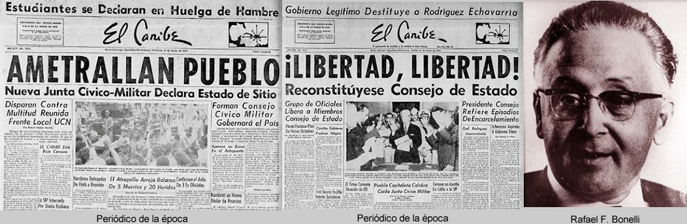

El 16.Ene.1962 una manifestación en el Parque Independencia, convocada por sectores democráticos, que exigía la renuncia de Balaguer y el fin del trujillismo, fue reprimida a balazos por las fuerzas militares y policiales, causando cinco muertos y decenas de heridos. Este hecho es conocido como la Masacre del Parque Independencia.
Ante la crisis provocada por la represión, el Secretario de las Fuerzas Armadas, general Pedro Rodríguez Echavarría, encabezó un golpe de Estado. A seguidas, Joaquín Balaguer disolvió el 1er. Consejo de Estado en el cual era presidente. Esa misma noche, el general Pedro Rodríguez Echavarría ordenó la detención de los líderes cívicos democráticos. Se estableció una Junta Cívico-Militar con la intención de mantener el control político y la presencia de Balaguer.
A solo 48 horas del golpe de estado, se produjo un contragolpe liderado por el teniente coronel Rafael Fernández Domínguez que arrestó al general Rodríguez Echavarría desbaratando su maniobra. Balaguer se asiló en la Sede del Vaticano y luego salió al exilio.
El segundo Consejo de Estado fue restaurado, Rafael F. Bonnelly asumió la presidencia provisional, sin Joaquín Balaguer. El nuevo gobierno asumió la tarea de impulsar la transición democrática y promover la destrujillización del Estado Dominicano.

La destrujillización es el proceso mediante el cual se procuró desmontar las estructuras políticas, militares, económicas y sociales heredadas de la dictadura de Rafael L. Trujillo. Debido a la profundidad de la influencia del régimen, este ha sido un proceso largo y complejo que, para muchos historiadores, aún no ha concluido plenamente.
Medidas más inmediatas
Las medidas más inmediatas para borrar los símbolos más visibles de la dictadura fueron:
1La confiscación y recuperación de las propiedades que la familia Trujillo había acumulado durante más de 30 años, por parte del Estado Dominicano mediante la Ley No. 5785 del 4 de enero de 1962.
2Recuperación del nombre original de la ciudad de Santo Domingo, eliminando el nombre impuesto de "Ciudad Trujillo". Lo mismo para la montaña más alta de Las Antillas, el Pico Duarte, antes llamado "Pico Trujillo".
3Eliminación y desintegración del Partido Dominicano, que era el partido único. Hoy existen decenas de partidos políticos.
4Aunque la población, de manera autónoma, desintegró a martillazos los bustos y placas conmemorativas. Otras debieron ser desmontadas.
5Juicios y condenas contra algunos de los asesinos de las hermanas Mirabal y contra esbirros conocidos de la dictadura que aún estaban en el país.
El debate pendiente
El principal debate que persiste en la República Dominicana se presenta en la profundidad del proceso de destrujillización. Muchos académicos sostienen que las medidas adoptadas fueron insuficientes y que nunca se implementó un plan integral para desmantelar las estructuras de poder y la cultura política creadas por el régimen.
Se señala a la Policía Nacional, creada por Trujillo, como una institución que aún mantiene una estructura militarizada, prácticas autoritarias y represivas.